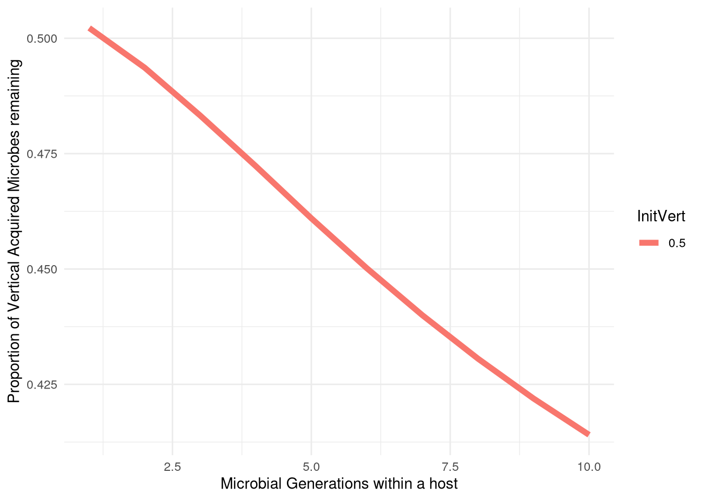

3 Paper 1 - Effective vertical inheritance
As we discuss in our paper, we include a comparison of vertical inheritance levels. We term ‘effective’ vertical inheritance as the proportion of parental microbes which are inherited at the point at which a host reproduces. For example, if a host inherits 99% of its microbes from its parents - but then lives for 100 microbial generations, the effective vertical inheritance will be lower than for 50 microbial generations due to acquistion of microbes from the environment, and the loss of parental microbes.
We address this by running some bespoke simulations where at the 500th host generation, we label parental microbes and track their abundance over the course of a host generation. We do this for each environmental condition. This works in ‘janky’ way initializing the simulation with 400 ‘species’ slots, of which only 200 are occupied. At generation 498 we copy the parental microbes into the additional 200 slots which are called “VI_Spec_X” etc, and then we track the abundance of these over the course of the simulation in the subsequent generation.
To properly test this - we first calculate the effective vertical inheritance, and then run our simulations as normal except we set microbial generation counts to 1, and we substitute the vertical inheritance values for the effective vertical inheritance values obtained for a generation count of interest. For example, in the following simulation we are interested in comparing the fitnesses of hosts with 50 microbial generations - while account for effective vertical inheritance. To address this, we will run a effective vertical inheritance simulation with 50 generations. We then determine what the effective vertical inheritance is, and then use that value as the effective vertical inheritance in a normal simulation where microbial generation count is 1. This allows to see if the benefits to host from microbial generation counts is the result of optimized vertical inheritance (in which case, fitnesses should be equivalent in both simulations) - or whether generation count itself is beneficial.
Most of the code is relatively unchanged from normal. The key difference is the use of a modified create_offspring_loop.cpp function.
knitr::opts_chunk$set(echo = TRUE)
library(readr)
library(reshape2)
library(Rcpp)
library(vegan)
library(parallel)
library(ggplot2)
num_unique_values <- function(vec) {
length(unique(vec))
}
# Function to calculate average distance between values
average_distance <- function(vec) {
n <- length(vec)
total_distance <- 0
total_pairs <- 0
for (i in 1:(n - 1)) {
for (j in (i + 1):n) {
total_distance <- total_distance + abs(vec[i] - vec[j])
total_pairs <- total_pairs + 1
}
}
total_distance / total_pairs
}
extract_pref_optima<-function(x){
do.call("rbind",lapply(x[[1]]$GenData,function(y){(y$HostPrefOptima)}))
}
extract_fitnesses<-function(data,rel_log_gen){
gendata=data$GenData
data2use=lapply(gendata,function(q){
env_microbe_fitness_changes<-mean((q$env_fits))#/x[[1]]$GenData[[500]]$env_fits))
host_microbe_fitness_changes<-mean((q$MicrobeFitness))#/x[[1]]$GenData[[500]]$MicrobeFitness))
host_fitness_changes<-mean((q$HostFitness))#/x[[1]]$GenData[[500]]$HostFitness))
gen_of_int_fitness_host<-mean(gendata[[rel_log_gen]]$HostFitness)
gen_of_int_fitness_microbe<-mean(gendata[[rel_log_gen]]$MicrobeFitness)
host_microbe_coeff=lm(q$MicrobeFitness~q$HostFitness)
host_microbe_coeff<-summary(host_microbe_coeff)$coefficients
host_microbe_coeff<-as.data.frame(host_microbe_coeff)$Estimate[2]
host_diversity<-mean(q$Diversity)
data.frame(EnvMicrobeFitness=env_microbe_fitness_changes,
HostMicrobeFitness=host_microbe_fitness_changes,
HostFitness=host_fitness_changes,
diversity=host_diversity,
gen_of_int_fitness_microbe=gen_of_int_fitness_microbe,
gen_of_int_fitness_host=gen_of_int_fitness_host,
host_microbe_coeff=host_microbe_coeff)
}
)
do.call("rbind",data2use)
}
calc_rich<-function(population){
population[population>0]<-T
colSums(population)
}
fast_mean <- function(x) {
x<-x[!is.na(x)]
sum(x) / length(x)
}
calc_div<-function(population){
relabund<-population/rowSums(population)
- rowSums(relabund* log(relabund))
}
fitness_func <- function(selection_parameter, optima, trait) {
q = exp(((trait - optima)^2) / -selection_parameter)
q
}
fitness_func_bacgen <- function(selection_parameter,optima1, optima2, trait) {
q = exp((((trait - mean(c(optima1, optima2)))^2))/ -selection_parameter)
q
}
mutate_trait <- function(trait, mutation_rate, mutation_sd) {
mutated_trait <- trait #+ rnorm(length(trait), mean = 0, sd = mutation_sd)
mutate_mask <- runif(length(trait)) < mutation_rate
mutated_trait[mutate_mask] <- rnorm(sum(mutate_mask), mean = mutated_trait[mutate_mask], sd = mutation_sd)
mutated_trait
}
Rcpp::sourceCpp('./evi_code/calccpp_fit.cpp')
sourceCpp("./evi_code/withingen_process.cpp")
sourceCpp("./evi_code/env_production_withingen.cpp")
Rcpp::sourceCpp("./evi_code/create_offspring_loop_vi.cpp")Below is the R code to run the effective vertical inheritance work, with blue highlighted code indicating that the code is bespoke for this section.
Create_OffSpring_Pop_cpp<-function(host_pop,n_micro,env_pool,envpoolsize,X,fixed_envpool,
selection_parameter_microbes,selection_parameter_hosts,microbe_trait_list, host_microbe_optima,
N_Species,env_condition,generation){
microbe_names<-paste("Microbe",1:N_Species,sep="_")
ENV_sampling_probability<-(env_pool)/envpoolsize #Calculate initial sampling probability based on environmental relative abundance
names(ENV_sampling_probability)<-names(env_pool)
if(generation == 498){
offspring_population<-offspring_loopfunc_vi(host_pop = host_pop,ENV_sampling_probability = ENV_sampling_probability,
host_microbe_optima = host_microbe_optima, X = X,
selection_parameter_microbes = selection_parameter_microbes,
env_condition = env_condition,microbe_trait_list = microbe_trait_list,
n_micro = n_micro,microbe_names = microbe_names)
}
else{
offspring_population<-offspring_loopfunc(host_pop = host_pop,ENV_sampling_probability = ENV_sampling_probability,
host_microbe_optima = host_microbe_optima, X = X,
selection_parameter_microbes = selection_parameter_microbes,
env_condition = env_condition,microbe_trait_list = microbe_trait_list,
n_micro = n_micro,microbe_names = microbe_names)
}
offspring_population<-list(offspring_population$host_pop,env_pool,microbe_trait_list,offspring_population$fitness_microbes,
offspring_population$weighted_samplingprob)
names(offspring_population)<-c("Child","Env","microbe_trait_list","microbefitness","microbe_samplingprob")
offspring_population
}lapply_wrapper_CPP<-function(XY,
HostPopulation, N_Microbes, envpoolsize, env_pool,fixed_envpool,generations,per_host_bac_gens,self_seed_prop,
selection_parameter_hosts,selection_parameter_microbes,host_trait_list,N_Species,traitpool_microbes,
generation_data_file,selection_parameter_env,env_cond_val,
microbiome_importances,host_microbe_optima,mutation_rate,mutation_sd,print_currentgen,env_type){
temp_list <- list()
print(paste("Current X Value is", XY[1], "Current EnvCon value is", XY[2]))
print(env_type)
gen_data<-list()
microbe_names<-paste("Microbe",1:N_Species,sep="_")
env_used <- NULL
if(!nrow(env_cond_val) == generations){
print("env_cond_val should be a matrix of the same length as the number of generations you are simulating")
stop()
}
init_microbial_fitness<-matrix(NA,nrow = length(traitpool_microbes),ncol=length(host_microbe_optima))
for(i in 1:ncol(init_microbial_fitness)){
init_microbial_fitness[,i] <- fitness_func_bacgen(selection_parameter = selection_parameter_microbes,
optima1 = host_microbe_optima[i],
optima2 = env_cond_val[1,1],trait = traitpool_microbes)
}
init_microbial_fitness<-init_microbial_fitness#[HostPopulation>0]
init_microbial_fitness<-weighted.mean(x = init_microbial_fitness,w = HostPopulation)
init_host_fitness<-vector()
for(i in 1:ncol(HostPopulation)){
mean_microbial_trait_val<- sum(traitpool_microbes * HostPopulation[,i])/N_Microbes
composite_host_trait<-((mean_microbial_trait_val * microbiome_importances[i]) + (host_microbe_optima[i] * (1-microbiome_importances[i])))
hostfitness<-fitness_func(selection_parameter = selection_parameter_hosts, trait = composite_host_trait,optima = env_cond_val[1,1])
init_host_fitness[i]<-hostfitness
}
if(!ncol(env_cond_val)==per_host_bac_gens){
print("Number of columns in env_conditions should be the number of bacterial generations")
stop()
}
if(is.na(self_seed_prop)){
print("Self seeding proportion is NA, please correct")
}
for (generation in 1:generations) {
if(generation ==1){
env_used<-fixed_envpool
}
if(per_host_bac_gens == 1){
self_seed_prop=1
}
env_cond_val_used<-as.vector(env_cond_val[generation,])
vi_ests<-matrix(NA,nrow = 400,ncol = 200)
for(bacgen in 1:per_host_bac_gens){
if(XY[2] + XY[3] > 1) {
print("The contribution of the fixed environment (Y) and the the autocthonous environment (var_env_con) is greater than 1, please correct this ")
stop()
}
gen_env_cond<-env_cond_val_used[bacgen]
env_used<-process_microbe_probs(env_cond_val = gen_env_cond,
fixed_envpool = fixed_envpool,
HostPopulation = HostPopulation,
N_Microbes = N_Microbes,
envpoolsize = envpoolsize,
selection_parameter_env = selection_parameter_env,
XY = XY,
traitpool_microbes = traitpool_microbes,env_used = env_used
)
env_fits<-weighted.mean(x = env_used[,3],w = env_used[,8])
env_used<-env_used[,8]
names(env_used)<-names(fixed_envpool)#rownames(microbe_probs)
HostPopulation<-process_host_cpp(HostPopulation = HostPopulation,
selection_parameter_microbes = selection_parameter_microbes,
host_microbe_optima = host_microbe_optima ,
env_condition = env_cond_val_used[bacgen],
traitpool_microbes = traitpool_microbes,
N_Microbes = N_Microbes,
self_seed_prop = self_seed_prop,env_used = env_used)
if(generation == 499){
vi_ests[,bacgen]<-HostPopulation[,1]
}
}
if(generation == 499){
write_rds(vi_ests,paste("X",env_type,XY[1],"vi_ests.RDS",sep="_"))
}
host_fitnessvector<-numeric()
host_fitnessvector <- calculate_host_fitness_cpp(as.matrix(HostPopulation),
traitpool_microbes, microbiome_importances,
host_microbe_optima,
selection_parameter_hosts, env_cond_val_used[per_host_bac_gens])
nomicrobiomehost_fitnessvector<-numeric()
nomicrobiomehost_fitnessvector <- calculate_host_fitness_cpp(as.matrix(HostPopulation),
traitpool_microbes,rep(0,length(microbiome_importances)),
host_microbe_optima,
selection_parameter_hosts, env_cond_val_used[per_host_bac_gens])
hostfitness_abs<-host_fitnessvector
host_fitnessvector<-host_fitnessvector#/mean(host_fitnessvector)
HostPopulationInt<-sample(colnames(HostPopulation),ncol(HostPopulation),replace = T,prob = host_fitnessvector)
host_microbe_optima_prevgen<-host_microbe_optima
HostPopulation<-HostPopulation[ , HostPopulationInt]
host_microbe_optima<-host_microbe_optima[HostPopulationInt]
microbiome_importances<-microbiome_importances[HostPopulationInt]
if(mutation_rate>0){
host_microbe_optima <- mutate_trait(host_microbe_optima, mutation_rate, mutation_sd)
}
HostPopulation<-as.matrix(HostPopulation)
names(host_microbe_optima)<-paste("Host",1:ncol(HostPopulation),sep="_")
names(microbiome_importances)<-paste("Host",1:ncol(HostPopulation),sep="_")
if(print_currentgen==T){print(paste("Current Generation is", generation))}
new_gen <- Create_OffSpring_Pop_cpp(host_pop = HostPopulation,
n_micro = N_Microbes,
env_pool = env_used,
envpoolsize = envpoolsize,
X = XY[1],
fixed_envpool = fixed_envpool,
microbe_trait_list=traitpool_microbes,
selection_parameter_microbes=selection_parameter_microbes,
selection_parameter_hosts = selection_parameter_hosts,
host_microbe_optima=host_microbe_optima,
N_Species=N_Species,
env_condition=env_cond_val_used[per_host_bac_gens],
generation = generation)
HostPopulation <- new_gen$Child
BrayDiv<-vegdist(t(HostPopulation),method="bray")
div_pergen<-calc_div(t(new_gen$Child))/log(calc_rich(new_gen$Child))
new_gen$HostFitness_Abs<-(hostfitness_abs)
new_gen$nomicrobiomehost_fitnessvector<-nomicrobiomehost_fitnessvector
new_gen$BrayDiv<-BrayDiv
new_gen$HostMicrobeOptima<-host_microbe_optima_prevgen
gen_data[[generation]]<-list(div_pergen,new_gen$HostFitness_Abs,new_gen$microbefitness,env_used,
env_fits,new_gen$HostMicrobeOptima,new_gen$nomicrobiomehost_fitnessvector,new_gen$microbe_samplingprob,
microbiome_importances,new_gen$BrayDiv)
names(gen_data[[generation]])<-c("Diversity","HostFitness","MicrobeFitness","env_used","env_fits"
,"HostMicrobeOptima","nomicrobiomehost_fitnessvector",
"microbe_samplingprob","microbiome_importances","BrayDiv")#,"HostPrefOptima","HostMicrobeOptima")
}
new_gen$GenData<-gen_data
new_gen$init_host_fitness<-init_host_fitness
new_gen$init_microbe_fitness<-init_microbial_fitness
temp_list[[paste0("X", XY[1], "_Y", XY[2],"_EnvCont",XY[3],"_HostSel",XY[4],"_MicrobeSel",XY[5])]] <- new_gen
temp_list
}3.1 Running an effective VI simulation
Host_PopSize= 100
MicrobePopSize=10^9#0000 #n_micro
EnvPoolSize=10^9#0000
N_Species =400
InitPopulation<-matrix(nrow = 200, ncol=Host_PopSize)
InitPopulation<-apply(InitPopulation,MARGIN=2,FUN=function(x){
rmultinom(n=1,size = MicrobePopSize, prob =rep(1/200,200))
})
rownames(InitPopulation)<-paste("Microbe",1:200,sep="_")
colnames(InitPopulation)<-paste("Host",1:Host_PopSize,sep="_")
VI_InitPopulation<-matrix(data=0,nrow = 200, ncol=Host_PopSize)
rownames(VI_InitPopulation)<-paste("VI_Microbe",1:200,sep="_")
colnames(VI_InitPopulation)<-paste("Host",1:Host_PopSize,sep="_")
InitPopulation<-rbind(InitPopulation,VI_InitPopulation)
EnvPool<-rep(EnvPoolSize/200,200)
names(EnvPool)<-paste("Microbe",1:200,sep="_")
VI_EnvPool<-rep(0,200)
names(VI_EnvPool)<-paste("VI_Microbe",1:200,sep="_")
EnvPool<-c(EnvPool,VI_EnvPool)
fixed_envpool<-EnvPool
traitpool_microbes<-runif(200,-1,1)
traitpool_microbes<-c(traitpool_microbes,traitpool_microbes)
names(traitpool_microbes)<-names(EnvPool)
mnames<-colnames(InitPopulation)
host_microbe_optima<-rep(0,Host_PopSize)
names(host_microbe_optima)<-mnames
microbiome_importances<-rep(1,Host_PopSize)#runif(Host_PopSize,0,1)
names(microbiome_importances)<-mnames
N_HostGens=800
start <- seq(0.1, 0.1, length.out = N_HostGens*0.2)
mid <- seq(0.1, 0.3, length.out = N_HostGens*0.8)
lowac_incvar<-sapply(c(start,mid)*2.8, function(x){rnorm(1,0,x)})
expand_vector<-function(vector, N) {
expanded_vector <- numeric()
for (i in 1:(length(vector) - 1)) {
expanded_vector <- c(expanded_vector, vector[i], seq(vector[i], vector[i + 1], length.out = N))
}
return(expanded_vector[1:(N*800)])
}
env_vec<-expand_vector(lowac_incvar,10)
new_mat <- matrix(env_vec,nrow = 800,ncol = 10,byrow = T)
combination=c(
0.5, #Proportion of vertical inheritance
0.05, #Proportion of host 'shedding' to the environment.
0.8) #Proportion of environmental pool which contributes to subsequent environmental pool.
envtype<-as.character("DummyEnv")
simulation_test <- lapply_wrapper_CPP(
XY = combination,
HostPopulation = InitPopulation,
N_Microbes = MicrobePopSize,
envpoolsize = EnvPoolSize,
env_pool = EnvPool,
generations = nrow(new_mat),
fixed_envpool = fixed_envpool,
selection_parameter_hosts = 1,
selection_parameter_microbes = 1,
traitpool_microbes = traitpool_microbes,
host_microbe_optima = host_microbe_optima,
selection_parameter_env = 1,
env_cond_val = new_mat,
N_Species = N_Species,
microbiome_importances = microbiome_importances,
per_host_bac_gens = ncol(new_mat),
self_seed_prop = 0.98,
generation_data_file = NA,
mutation_rate = 0.0,
mutation_sd = 0.0,
print_currentgen = F,
env_type=envtype
)## [1] "Current X Value is 0.5 Current EnvCon value is 0.05"
## [1] "DummyEnv"We have now run a simulation where we have measured effective vertical inheritance. We can analysis this as follows:
viests<-list.files(pattern="X*ests.RDS")
viests<-lapply(viests,read_rds)
viests<-lapply(viests,function(q){
colSums(q[201:400,])/colSums(q)
})
names(viests)<-list.files(pattern="X*ests.RDS")
viests<-do.call("rbind",viests)
viests<-reshape2::melt(viests)
viests<-viests[complete.cases(viests),]
viests$InitVert<- gsub(".RDS","",viests$Var1)
viests$InitVert<- stringr::word(viests$InitVert,3,sep="_")
#viests$InitVert<-gsub("[^0-9.-]", "", viests$InitVert)
efi_relationship<-ggplot(viests) +
aes(x = Var2, y = value, colour = InitVert) +
geom_line(linewidth=2) +
scale_color_hue(direction = 1) +
theme_minimal() + xlab("Microbial Generations within a host") +
ylab("Proportion of Vertical Acquired Microbes remaining") #+ facet_wrap(~Environment)
efi_relationship
We can now see that at microbial generation 10 the effective vertical inheritance is approximately 0.38 - despite hosts initially obtaining 50% of their microbiome from their parent.